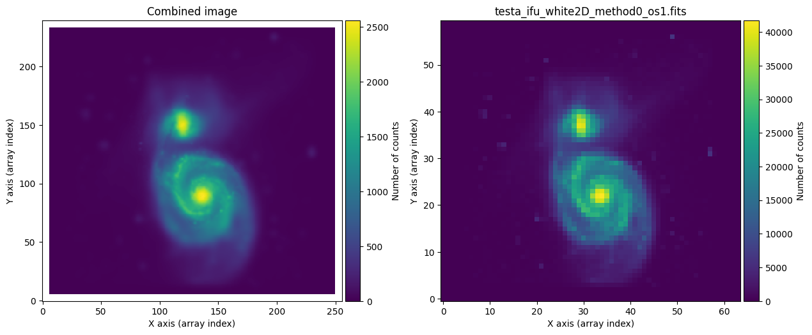
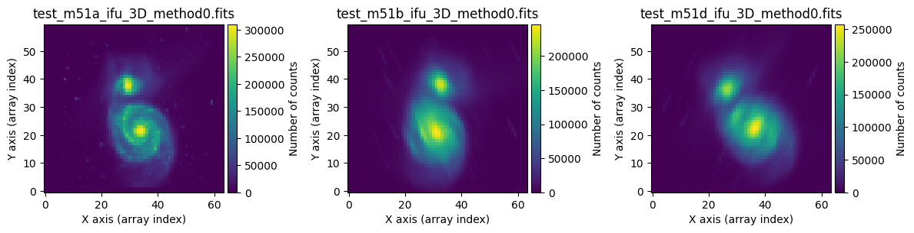

Generation of data cube mosaics
Here is the procedure that can be used to generate mosaics with data cubes.
Warning
Please note that the code shown below is under development and may undergo modifications.
Before tackling the combination of 3D data cubes, let’s see how the numina
package facilitates the combination of 2D images.
Combination of 2D images
For this example we are using the files scene_m51_2d.yaml and m51_dss1.fits.
Execute fridadrp-ifu_simulator:
(venv_frida) $ fridadrp-ifu_simulator \
--scene scene_m51_2d.yaml \
--grating medium-K \
--scale coarse \
--delta_ra_teles_arcsec 0.0 \
--delta_dec_teles_arcsec 0.0 \
--instrument_pa_deg 0.0 \
--flatpix2pix none \
--stop_after_ifu_3D_method0 \
--prefix_intermediate_FITS testa
(venv_frida) $ fridadrp-ifu_simulator \
--scene scene_m51_2d.yaml \
--grating medium-K \
--scale fine \
--delta_ra_teles_arcsec -0.1 \
--delta_dec_teles_arcsec -0.2 \
--instrument_pa_deg 40.0 \
--flatpix2pix none \
--stop_after_ifu_3D_method0 \
--prefix_intermediate_FITS testb
(venv_frida) $ fridadrp-ifu_simulator \
--scene scene_m51_2d.yaml \
--grating medium-K \
--scale fine \
--delta_ra_teles_arcsec 0.2 \
--delta_dec_teles_arcsec 0.2 \
--instrument_pa_deg 20.0 \
--flatpix2pix none \
--stop_after_ifu_3D_method0 \
--prefix_intermediate_FITS testc
We have used the parameter --stop_after_ifu_3D_method0 because we do not
need to execute all the steps of the simulator to generate the images we will
need in this case. Note that the first execution uses --scale coarse, while the
next two use --scale fine. Additionally, the values of
--delta_ra_teles_arcsec, --delta_dec_teles_arcsec, and
--instrument_pa_deg are modified.
{kind=link}
The next step is to generate an auxiliary text file with the names of the FITS images to be combined.
(venv_frida) $ ls test?_ifu_white2D_method0_os1.fits > list_2d_images.txt
(venv_frida) $ cat list_2d_images.txt
testa_ifu_white2D_method0_os1.fits
testb_ifu_white2D_method0_os1.fits
testc_ifu_white2D_method0_os1.fits
To combine the 3 selected images, we only need to execute the following Numina script:
(venv_frida) $ numina-generate_mosaic_of_2d_images \
list_2d_images.txt combination_2d.fits \
--verbose
input_list: list_2d_images.txt
output_filename: combination_2d.fits
reproject_method: adaptive
extname_image: PRIMARY
extname_mask: None
combination_function: mean
output_3D_stack: None
verbose: True
echo: False
* Reading: testa_ifu_white2D_method0_os1.fits
hdu2d_image.header['NAXIS1']=64
hdu2d_image.header['NAXIS2']=60
generating mask from np.nan values
Number of masked pixels / total: 0 / 3840
* Reading: testb_ifu_white2D_method0_os1.fits
hdu2d_image.header['NAXIS1']=64
hdu2d_image.header['NAXIS2']=60
generating mask from np.nan values
Number of masked pixels / total: 0 / 3840
* Reading: testc_ifu_white2D_method0_os1.fits
hdu2d_image.header['NAXIS1']=64
hdu2d_image.header['NAXIS2']=60
generating mask from np.nan values
Number of masked pixels / total: 0 / 3840
Total number of images to be combined: 3
wcs_mosaic2d=WCS Keywords
Number of WCS axes: 2
CTYPE : 'RA---TAN' 'DEC--TAN'
CRVAL : 9.259258514947486e-06 0.0
CRPIX : 125.16666693574936 120.50000000417663
PC1_1 PC1_2 : 1.0 0.0
PC2_1 PC2_2 : 0.0 1.0
CDELT : -2.7777777777777233e-06 2.7777777777777233e-06
NAXIS : 0 0
shape_mosaic2d=(240, 256)
Reprojection method: adaptive
Combination function: mean
Saving combined 2D image: combination_2d.fits
Next, we compare the result of the combination of the 3 simulated exposures with the first exposure alone: both cover the field of the coarse camera. The improvement in spatial resolution in the combined image is noticeable after including the two pointings made with the fine camera. Note that the combined image has the sampling corresponding to the fine camera. Hence, the number of counts shows such a different value in both images.
{kind=link}
The following figure shows the result of combining the two exposures obtained
with the ‘fine’ camera, represented on top of the first exposure calculated
with an oversampling of 10 (file testa_ifu_white2D_method0_os10.fits).

Generation of example 3D data cubes
For this example we are using the files scene_m51_3d.yaml and m51_dss1.fits.
Execute fridadrp-ifu_simulator:
(venv_frida) $ fridadrp-ifu_simulator \
--scene scene_m51_3d.yaml \
--grating medium-K \
--scale fine \
--airmass 1.0 \
--parallactic_angle_deg 0 \
--instrument_pa_deg 0 \
--stop_after_ifu_3D_method0 \
--prefix_intermediate_FITS test_m51a \
--seed 1234
(venv_frida) $ fridadrp-ifu_simulator \
--scene scene_m51_3d.yaml \
--grating medium-K \
--scale fine \
--airmass 3.00 \
--parallactic_angle_deg 45 \
--instrument_pa_deg 20 \
--stop_after_ifu_3D_method0 \
--prefix_intermediate_FITS test_m51b \
--seed 2345
(venv_frida) $ fridadrp-ifu_simulator \
--scene scene_m51_3d.yaml \
--grating medium-K \
--scale fine \
--airmass 3.00 \
--parallactic_angle_deg -45 \
--instrument_pa_deg 340 \
--stop_after_ifu_3D_method0 \
--prefix_intermediate_FITS test_m51c \
--seed 3456
We have used again the parameter --stop_after_ifu_3D_method0 because we do
not need to execute all the steps of the simulator to generate the images we
will need in this example. In all cases, we are using the fine camera. In
the first exposure, the airmass is 1.0. In the next two exposures we have
chosen a high airmass to exaggerate the effect of atmospheric refraction,
modifying both the value of the parallactic angle and the instrument.
We can quickly visualize the result with the help of the qfitsview program.
With the idea of being able to change the slice in the spectral direction
simultaneously in the three exposures, we will first generate an auxiliary
image that performs a stack of the HDUs (header and data units) from different
FITS files into a single FITS file.
(venv_frida) $ fitsinfo test_m51*3D*.fits
Filename: test_m51a_ifu_3D_method0.fits
No. Name Ver Type Cards Dimensions Format
0 PRIMARY 1 PrimaryHDU 81 (64, 60, 2048) float32
Filename: test_m51b_ifu_3D_method0.fits
No. Name Ver Type Cards Dimensions Format
0 PRIMARY 1 PrimaryHDU 83 (64, 60, 2048) float32
Filename: test_m51c_ifu_3D_method0.fits
No. Name Ver Type Cards Dimensions Format
0 PRIMARY 1 PrimaryHDU 83 (64, 60, 2048) float32
(venv_frida) $ ls test_m51*3D*.fits > list_3d_images.txt
(venv_frida) $ cat list_3d_images.txt
test_m51a_ifu_3D_method0.fits
test_m51b_ifu_3D_method0.fits
test_m51c_ifu_3D_method0.fits
(venv_frida) $ numina-stack_hdus list_3d_images.txt stack_3d.fits
(venv_frida) $ qfitsview stack_3d.fits
After executing the last command, select ‘Read All’ when qfitsview asks for
the extension to read.
If we collapse the data cubes along the spectral direction (NAXIS3), the effect of atmospheric refraction is clearly noticeable.
{kind=link}
If we combine the 3 data cubes ignoring the problem of atmospheric refraction, the result is not satisfactory.
(venv_frida) $ numina-generate_mosaic_of_3d_cubes \
list_3d_images.txt \
combination_3d.fits \
--verbose
$ fitsinfo combination_3d.fits
Filename: combination_3d.fits
No. Name Ver Type Cards Dimensions Format
0 PRIMARY 1 PrimaryHDU 27 (81, 78, 2048) float32
1 FOOTPRINT 1 ImageHDU 29 (81, 78, 2048) uint8
$ qfitsview combination_3d.fits
It is advisable to correct the individual exposures first before combining the different data cubes.
We can use an initial script that allows us to understand the expected effect of atmospheric refraction.
(venv_frida) $ numina-compute_adr_wavelength \
--airmass 3 \
--reference_wave_vacuum 1.7 \
--wave_ini 1.0 \
--wave_end 2.5 \
--wave_step 0.1 \
--wave_unit micron \
--plots
Wavelength ADR
micron arcsec
---------- ------
1.000 0.483
1.100 0.355
1.200 0.257
1.300 0.181
1.400 0.121
1.500 0.072
1.600 0.033
1.700 0.000
1.800 -0.027
1.900 -0.051
2.000 -0.071
2.100 -0.088
2.200 -0.102
2.300 -0.115
2.400 -0.127
2.500 -0.137

When correcting each individual exposure, we will first insert an extension with a binary table that stores the effect of atmospheric refraction into each FITS file.
(venv_frida) $ numina-include_adrtheor_in_3d_cube \
test_m51b_ifu_3D_method0.fits \
--verbose --plots
(venv_frida) $ numina-include_adrtheor_in_3d_cube \
test_m51c_ifu_3D_method0.fits \
--verbose --plots
{kind=link}
{kind=link}
Important: the previous step stores the correction to be applied but does not apply it to the data. To perform this process, we need to use an additional script.
We see that a new extension ADRTHEOR has appeared in each data cube.
(venv_frida) $ fitsinfo test_m51*3D*.fits
Filename: test_m51a_ifu_3D_method0.fits
No. Name Ver Type Cards Dimensions Format
0 PRIMARY 1 PrimaryHDU 81 (64, 60, 2048) float32
1 ADRTHEOR 1 BinTableHDU 21 2048R x 2C [D, D]
Filename: test_m51b_ifu_3D_method0.fits
No. Name Ver Type Cards Dimensions Format
0 PRIMARY 1 PrimaryHDU 83 (64, 60, 2048) float32
1 ADRTHEOR 1 BinTableHDU 21 2048R x 2C [D, D]
Filename: test_m51c_ifu_3D_method0.fits
No. Name Ver Type Cards Dimensions Format
0 PRIMARY 1 PrimaryHDU 83 (64, 60, 2048) float32
1 ADRTHEOR 1 BinTableHDU 21 2048R x 2C [D, D]
We can also empirically measure atmospheric refraction in each data cube using cross-correlation.
(venv_frida) $ numina-measure_slice_xy_offsets_in_3d_cube \
test_m51b_ifu_3D_method0.fits \
100 \
--iterate \
--extname adrcross \
--verbose --iterate --plots
(venv_frida) $ numina-measure_slice_xy_offsets_in_3d_cube \
test_m51c_ifu_3D_method0.fits \
100 \
--iterate \
--extname adrcross \
--verbose --iterate --plots
The previous procedure has added a new extension ADRCROSS to each of the
corrected images.
(venv_frida) $ fitsinfo test_m51*3D*.fits
Filename: test_m51a_ifu_3D_method0.fits
No. Name Ver Type Cards Dimensions Format
0 PRIMARY 1 PrimaryHDU 81 (64, 60, 2048) float32
1 ADRTHEOR 1 BinTableHDU 21 2048R x 2C [D, D]
Filename: test_m51b_ifu_3D_method0.fits
No. Name Ver Type Cards Dimensions Format
0 PRIMARY 1 PrimaryHDU 83 (64, 60, 2048) float32
1 ADRTHEOR 1 BinTableHDU 21 2048R x 2C [D, D]
2 ADRCROSS 1 BinTableHDU 24 2048R x 2C [D, D]
Filename: test_m51c_ifu_3D_method0.fits
No. Name Ver Type Cards Dimensions Format
0 PRIMARY 1 PrimaryHDU 83 (64, 60, 2048) float32
1 ADRTHEOR 1 BinTableHDU 21 2048R x 2C [D, D]
2 ADRCROSS 1 BinTableHDU 24 2048R x 2C [D, D]
We can easily compare the expected atmospheric refraction with that calculated using the cross-correlation technique.
(venv_frida) $ numina-compare_adr_extensions_in_3d_cube \
test_m51b_ifu_3D_method0.fits \
adrcross adrtheor

At this point, we can correct the exposures for atmospheric refraction using
the preferred extension (in this case, ADRCROSS or ADRTHEOR).
(venv_frida) $ numina-adr_correction_from_extension_in_3d_cube \
test_m51b_ifu_3D_method0.fits \
--extname_adr adrtheor \
--extname_mask None \
--output test_m51b_ifu_3D_method0_corrected_ADRTHEOR.fits \
--verbose
(venv_frida) $ numina-adr_correction_from_extension_in_3d_cube \
test_m51c_ifu_3D_method0.fits \
--extname_adr adrtheor \
--extname_mask None \
--output test_m51c_ifu_3D_method0_corrected_ADRTHEOR.fits \
--verbose
(venv_frida) $ ls test_m51a_ifu_3D_method0.fits \
test_m51*_ADRTHEOR.fits > list_3d_images_ADRTHEOR.txt
(venv_frida) cat list_3d_images_ADRTHEOR.txt
test_m51a_ifu_3D_method0.fits
test_m51b_ifu_3D_method0_corrected_ADRTHEOR.fits
test_m51c_ifu_3D_method0_corrected_ADRTHEOR.fits
Now we can add the 3 data cubes.
(venv_frida) $ numina-generate_mosaic_of_3d_cubes \
list_3d_images_ADRTHEOR.txt \
combination_3d_ADRTHEOR.fits \
--verbose
(venv_frida) $ qfitsview combination_3d_ADRTHEOR.fits
Finally, we can compare the effect of correcting or not correcting for atmospheric refraction.
(venv_frida) $ ls combination_3d*.fits > list_3d_combinations.txt
(venv_frida) $ numina-stack_hdus list_3d_combinations.txt stack_3d_combinations.fits
(venv_frida) $ qfitsview stack_3d_combinations.fits
ToDo: add the option to correct for atmospheric refraction by generating a corrected cube with a predefined celestial WCS with an arbitrary size. In this way, instead of interpolating when correcting for atmospheric refraction and when combining cubes with different pointings, we would only perform a single interpolation at the time of atmospheric refraction correction.